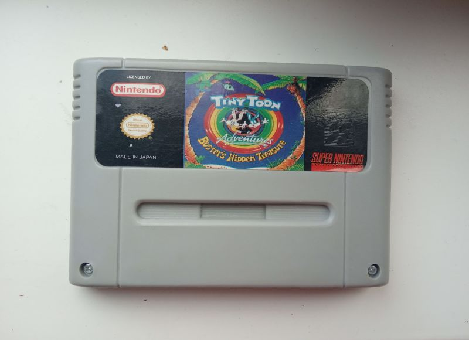
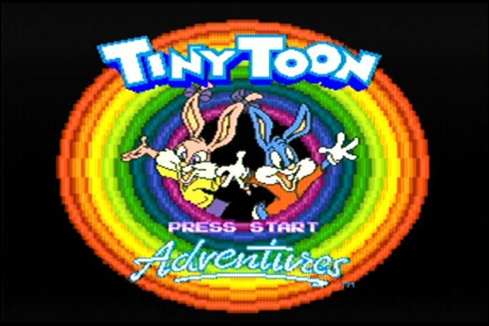

Tiny Toon Adventures Buster`s Hidden Treasure
Типичный пиратcкий картридж для Super Nintendo, почему так:1) Явное нарушение пропорций изображения на коробке с картриджем.
2) Коробка меньших размеров.
3) Отсутствие копирайтов разработчика на передней части.
4) Скриншоты на задней части коробки взяты с разных игр этой серии.
5) Крестовые винты на картридже.
6) Задняя часть совершенно другая - вырезы вместо отверстий.
7) Клйма сзади и предупреждающие надписи отличаются.
8) Плата картриджа использует бескорпусную технологию.
В нашем музее имеется неплохая версия - коробка, холдер и картридж.
Достаточно неплохая попытка закосить под лицуху, однако один жирный факт который ломает картину моментально состоит в том, что игры с таким названием на Супер Нинтендо не существует, эта игра выходила только для Mega Drive/Genesis. Сзади однако взяты скиншоты и с Hidden Treasure и с той, что внутри. Так что же это такое?
Это действительно игра Tiny Toon, но никакой не Hidden Treasure, а Buster Busts Loose. Я думаю что попытка замаскировать одну игру под другую связана с тем, что Hidden Treasure был у нас известен, потому как Mega Drive был гораздо сильнее распространён.
Судя по ценнику в 90 рублей - игра продавалась в России после деноминации в 1997-98 годов и стоила всё еще значительных денег. Сам картридж был выпущен не раньше 1993 года.
Это уже не первый раз, когда пираты пытаются выдать игру для Mega Drive в качестве пиратки на SNES, у нас в музее также представлена Super Probotecor с обложкой от игры Contra Hard Corps.
Сама же игра кстати говоря в отличии от другого пиратского издания игры внутри имеет действительно японскую версию игры, в то время как другая копия( более раняя ) имела версию из США, но при этом играется также как обычная версия.
Игра на картридже: Tiny Toon Adventures Buster Busts Loose.
Дополнительные фото и описание к ним: